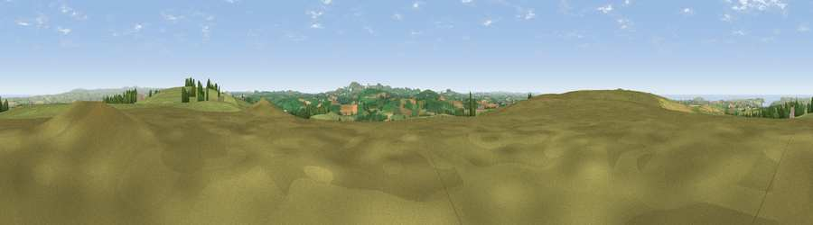

Viewpoint near Tremayne
#6301 in England · top 14% of its area beats it · near Tremayne · open accessWhere it is
The exact computed spot (SW 95525 68075). Click the marker for map links.
Public access: this spot lies on mapped open-access land (CRoW Act 2000) — you may roam here on foot. Computed from Natural England's CRoW access layer and OpenStreetMap rights of way — not the legal definitive map. Always verify locally.
The view, rendered

A 360° render of this exact spot computed from the terrain model, tree cover and land cover — summer colours, afternoon light, calibrated against photographs of famous viewpoints. Real trees, hedges and buildings will differ in detail.
The panorama
Grey silhouette: terrain skyline in each direction (720 bearings, Earth curvature and refraction included). Dashed green: skyline with trees (+15 m) and buildings (+8 m) as obstacles. Blue strip: how far the ground is visible on each bearing.
Where the view opens
Wedge length = distance to the farthest visible ground on that bearing (vegetation-aware). Rings at 10, 25 and 50 km.
What fills the view
72% grassland · 15% cropland · 6% woodland · 5% water · 2% built-up
Angular shares of the visible panorama (visual magnitude), not map area. Landscape diversity 0.40 (0–1 Shannon).
Key numbers
More beautiful places nearby
The staircase of upgrades: each row has a higher view potential than everything closer. Driving times are estimates from straight-line distance, calibrated against real road routing — check an actual route before setting out.
| Place | Direction | Drive | Score |
|---|---|---|---|
| Viewpoint near Tremayne | W · 0 km | ~2 min | 71.2 |
| Viewpoint near Tremayne | W · 1 km | ~2 min | 74.2 |
| St Breock Beacon | ENE · 1 km | ~4 min | 74.5 |
| Viewpoint near St Eval | W · 5 km | ~12 min | 78.3 |
| Viewpoint near Roche | SSE · 10 km | ~20 min | 80.9 |
| Viewpoint near Stenalees | SSE · 12 km | ~22 min | 88.0 |
| Viewpoint near Crackington Haven | NNE · 31 km | ~49 min | 88.1 |
| Viewpoint near Combe Martin | NE · 102 km | ~127 min | 88.9 |
50.47674, -4.88322 · source: screening · position refined by local search. Computed location — check access rights before visiting.